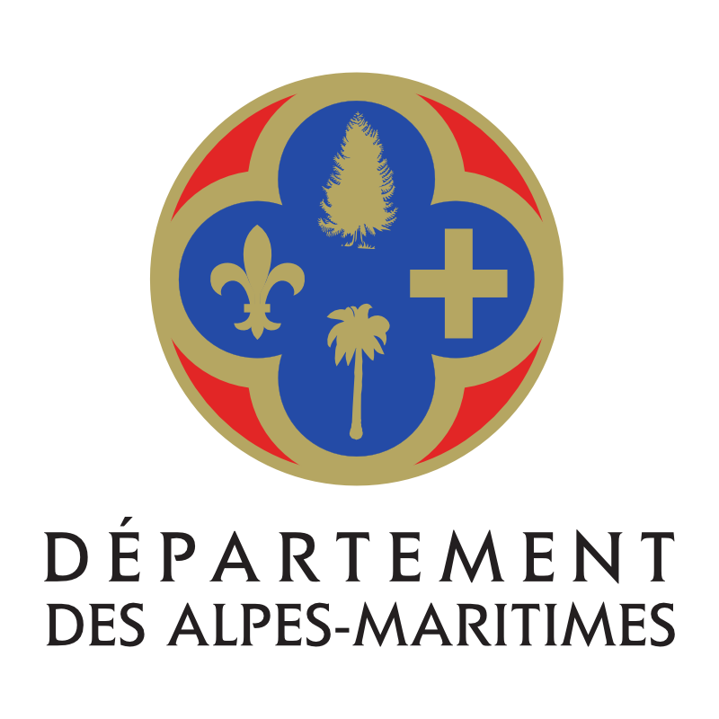
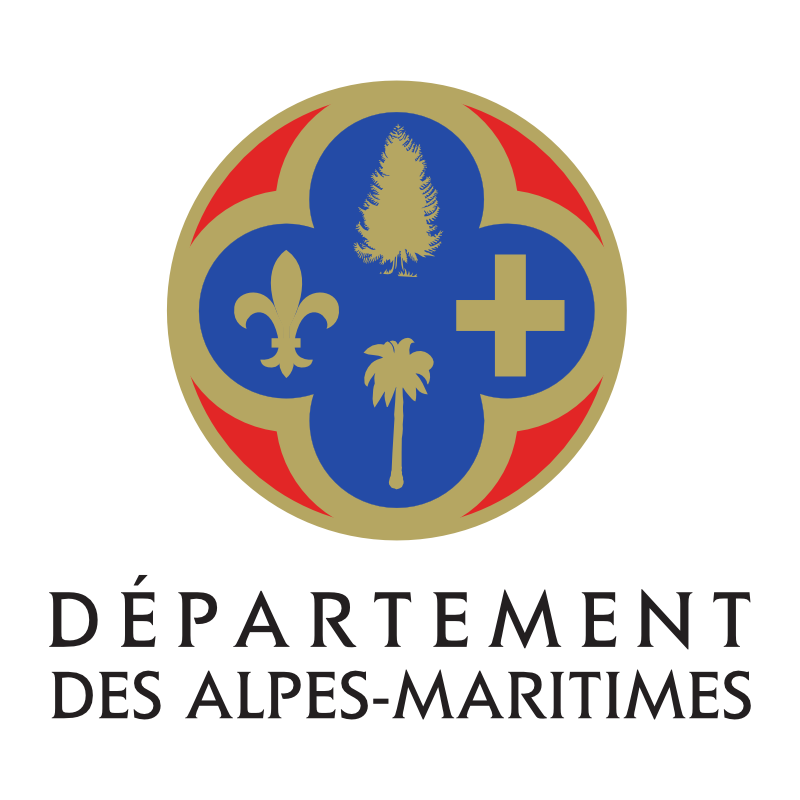

Créée en 1990, la Galerie Delova Kolbassina est un lieu atypique chargé d'histoire. Transformée en galerie d’art, cette ancienne boucherie, située au coeur du Vieux-Nice, conserve les traces de son passé.
Depuis sa création, la Galerie s’est imposée comme un lieu d’inspiration, de créativité et d’échanges artistiques.

GALERIE
DELOVA KOLBASSINA
 
